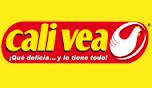

Mak Piko: (Asadero - Restaurante)

El asadero - restaurante Mak Piko que rico !!! es una organizacion dedicada a prestar servicios y ofrecer productos preparados al cliente. Cuenta con mas de 10 personas altamente calificadas para la preparacion de los alimentos.Cuenta con un grupo de meseros que estan dispuestos a la atencion del cliente mientras esté disfrutando de un delisioso plato.
Las instalciones cuenta con la iluinacion adecuada y un amplia zona de atencion ofreciendo un ambiente comodo y agradable para disfrutar y compartir en familia mientras se disfruta de uno de los platos.
Ubicación : El asadero - restaurante Mak Piko esta ubicado en el barrio Bochica, en el sur de la ciudad de Bogotá.
Dirección : Tv 5 j # 46-42 sur.
Barrio : Bochica sur - Rafael Uribe Uribe.